`r sprintf('plot.matrix v%s', packageVersion('plot.matrix'))`
Sigbert Klinke
sigbert@hu-berlin.de09 十二月, 2022
Source:vignettes/plot.matrix.Rmd
plot.matrix.RmdGeneral
The aim of the package plot.matrix is to visualize a
matrix as is with a heatmap. Automatic reordering of rows and columns is
only done if necessary. This is different as in similar function like
heatmap. Additionally it should be user-friendly and give
access to a lot of options if necessary.
Currently the package implements the S3 functions below such that you
can use the generic plot function to plot matrices as
heatmaps:
-
plot.matrixfor a heatmap for a plain matrix, -
plot.loadingsfor a heatmap for a loadings matrix from factor analysis or principal component analysis (reordering of rows!).
The plot itself is composed by a heatmap (usually left) where colors represent matrix entries and a key (usually right) which links the colors to the values.
First examples
library('plot.matrix')
# numeric matrix
x <- matrix(runif(35), ncol=5) # create a numeric matrix object
class(x)
#> [1] "matrix" "array"
par(mar=c(5.1, 4.1, 4.1, 4.1)) # adapt margins
plot(x)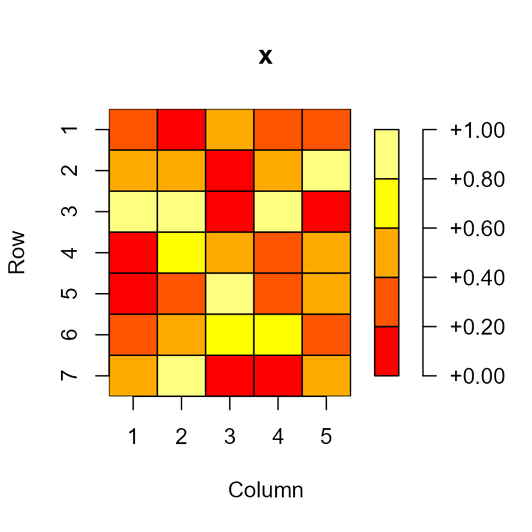
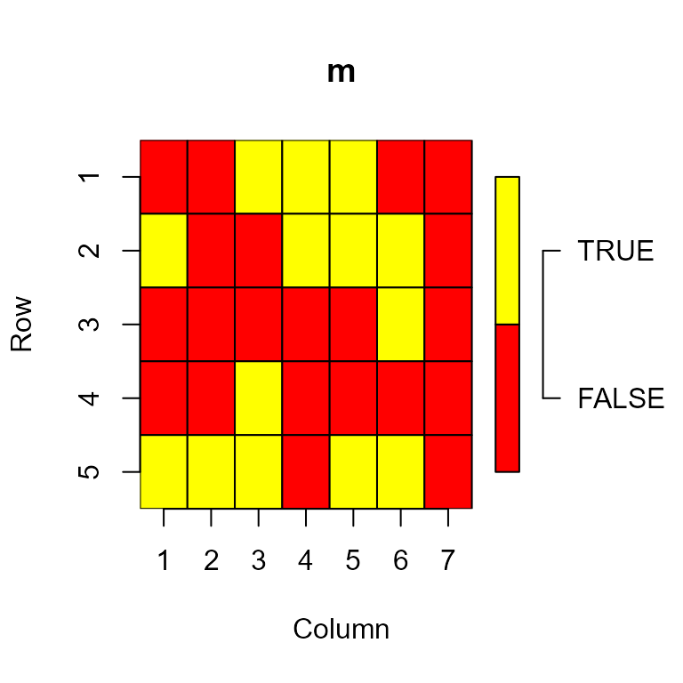
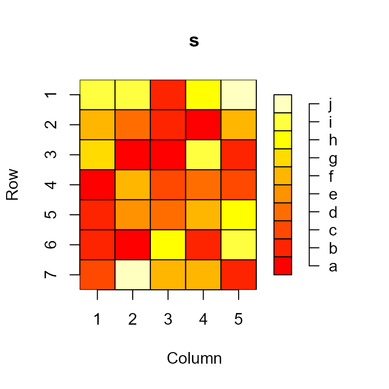
library('plot.matrix')
library('psych')
data <- na.omit(bfi[,1:25])
fa <- fa(data, 5, rotate="varimax")
par(mar=c(5.1, 4.1, 4.1, 4.1)) # adapt margins
plot(loadings(fa), cex=0.5)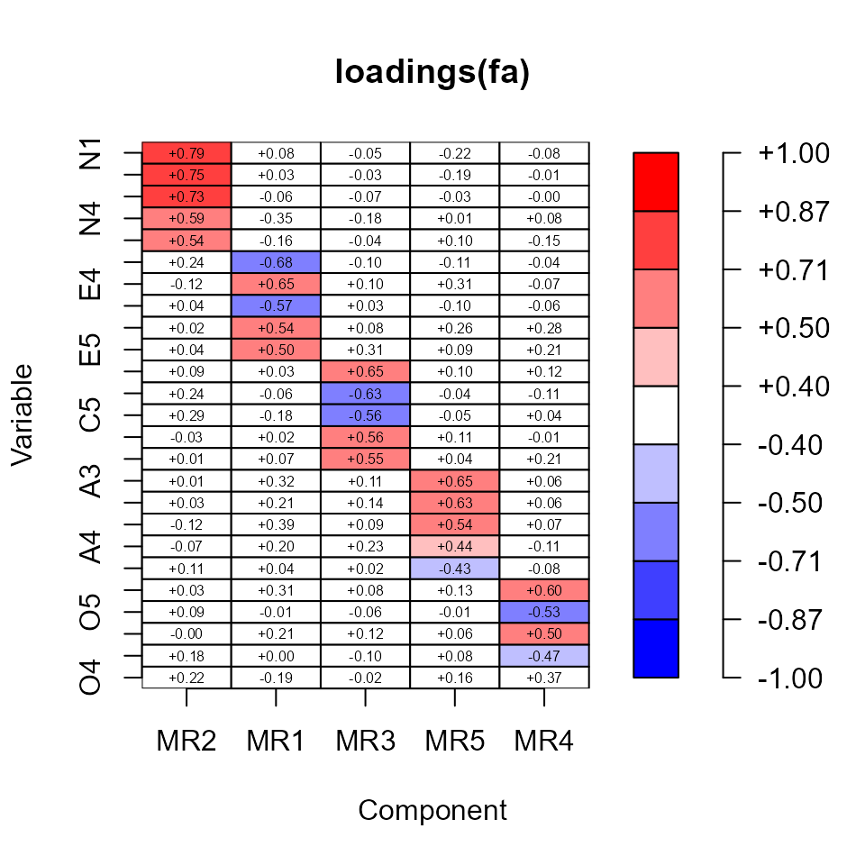
Assigning colors and breaks
plot.matrix uses the command assignColors,
also part of plot.matrix, assigns to each value in
x a color based on the parameters breaks,
col and na.col given.
In case of a numeric matrix breaks can be
- a number, giving the number of intervals covering the range of
x, - a vector of two numbers, given the range to cover with 10 intervals, or
- a vector with more than two numbers, specify the interval borders
In case of a non-numeric vector breaks must contain all
values which are will get a color. If breaks is not given
then a sensible default is chosen: in case of a numeric vector derived
from pretty and otherwise all unique values/levels are
used.
col can be either be a vector of colors or a function
which generates via col(n) a set of n colors.
The default is to use heat.colors.
Choosing color palettes/functions
In case that you want to provide your own color palettes/functions for plotting there are several good choices within R packages:
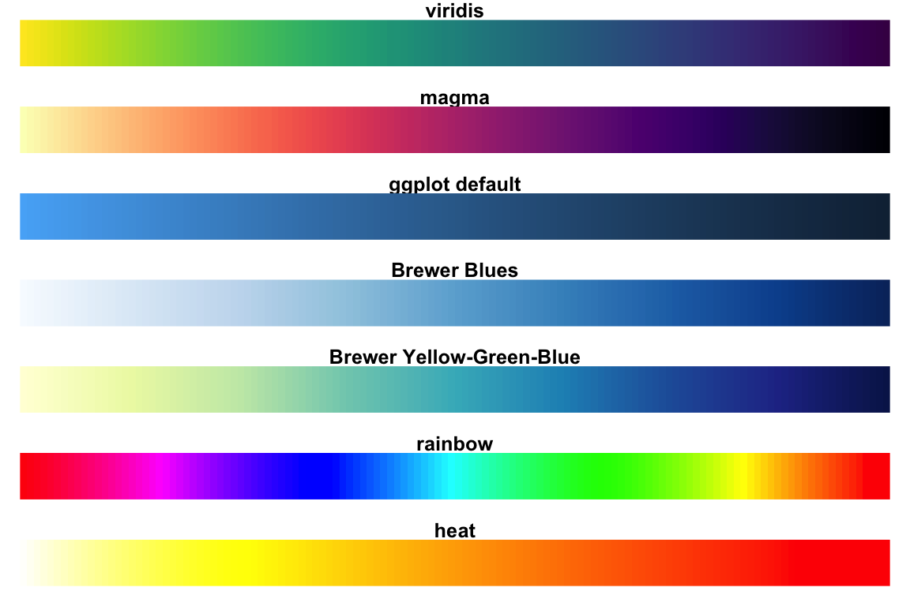
Source: Datanovia - Top R Color Palettes to Know for Great Data Visualization
Structure of the plot
The plot is created in several steps
- a call to the
plotcommand to create the basic plot - draw colored polygons for each matrix entry with the
polygoncommand - if necessary add the value of each matrix entry with the
textcommand in a polygon - if necessary draw x- and y-axis with the
axiscommand into the plot - if necessary draw the key with the
axisand thepolygoncommand
Formal parameters
| plot.matrix( | x, | ||
| y | = | NULL, | |
| breaks | = | NULL, | |
| col | = | heat.colors, | |
| na.col | = | “white”, | |
| na.cell | = | TRUE, | |
| na.print | = | TRUE, | |
| digits | = | NA, | |
| fmt.cell | = | NULL, | |
| fmt.key | = | NULL, | |
| spacing.key | = | c(1, 0.5, 0), | |
| polygon.cell | = | NULL, | |
| polygon.key | = | NULL, | |
| text.cell | = | NULL, | |
| key | = | list(side = 4, las = 1), | |
| axis.col | = | list(side = 1), | |
| axis.row | = | list(side = 2), | |
| axis.key | = | NULL, | |
| max.col | = | 70, | |
| …) |
You may influence the appearance by setting your own parameters:
-
...all parameters given here will be given to theplotcommand, e.g.xlab,ylab, …. -
polygon.celllist of parameters for drawing polygons for matrix entries -
text.celllist of parameters for putting for matrix entries as texts -
axis.colandaxis.rowlist of parameters for drawing for row and column axes -
key,axis.key,spacing.keyandpolygon.keyto draw the key -
max.colto determine when text color and background color to near
Set global parameters
You may set global parameters for all subsequent calls of
axis, polygon and text via the
.... The following parameters are supported
| function | parameter(s) |
|---|---|
axis |
cex.axis, col.axis,
col.ticks, font, font.axis,
hadj, las, lwd.ticks,
line , outer, padj,
tck, tcl, tick
|
polygon |
angle, border, density
|
text |
cex, font, vfont
|
Frequently asked questions
How can I rotate the axis labels such they do no overlap?
Use the parameter las, the style of axis labels, in
axis.coland/or axis.row with
-
0= always parallel to the axis [default], -
1= always horizontal, -
2= always perpendicular to the axis, and -
3= always vertical.
x <- matrix(runif(35), ncol=5) # create a numeric matrix object
par(mar=c(5.1, 4.1, 4.1, 4.1)) # adapt margins such that all labels are visible
plot(x, axis.col=list(side=1, las=2), axis.row = list(side=2, las=1))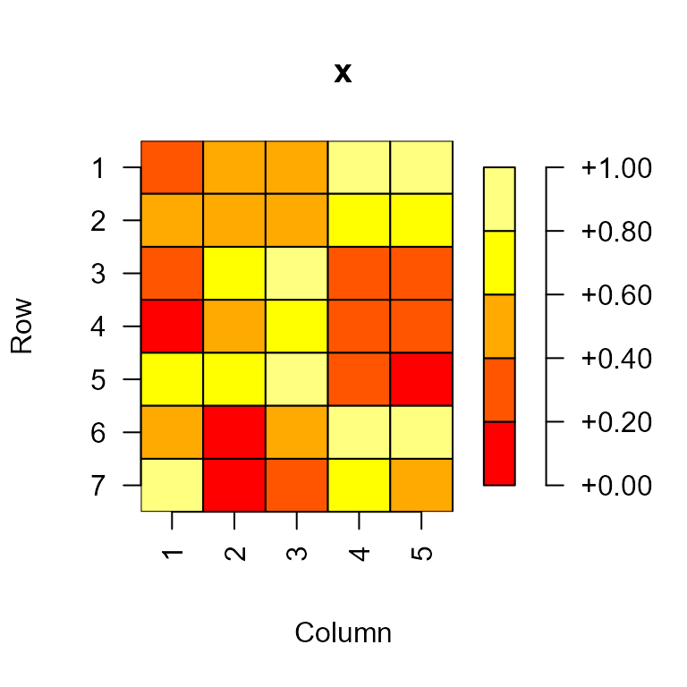
How can I show a matrix of parameters and, for example, their standard errors below?
You need to access the position of the cell text used by accessing
the invisible return of plot.matrix. The
cell.text contains the parameters used to draw the
text.
Note the double braces: [[i,j]]
param_est <- matrix(runif(25), nrow=5)
par(mar=c(5.1, 4.1, 4.1, 4.1)) # adapt margins such that all labels are visible
res <- plot(param_est, digits=2, text.cell=list(pos=3, cex=0.75))
sderr_est <- matrix(runif(25)/10, nrow=5)
for (i in 1:nrow(param_est)) {
for (j in 1:ncol(param_est)) {
args <- res$cell.text[[i,j]]
args$labels <- paste0('(', fmt(sderr_est[i,j], 3), ')')
args$cex <- 0.5
args$pos <- 1
do.call(text, args)
}
}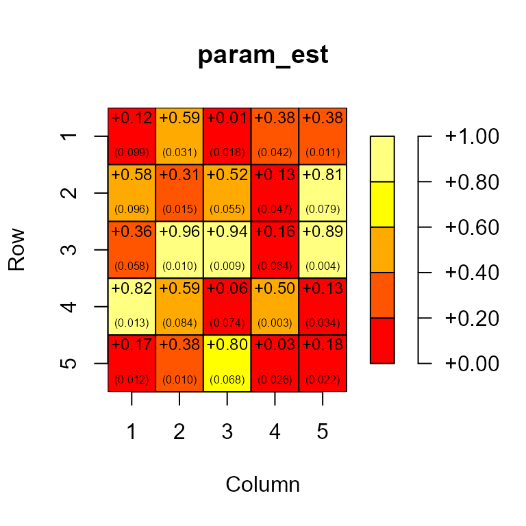
Or alternatively
param_est <- matrix(runif(25), nrow=5)
par(mar=c(5.1, 4.1, 4.1, 4.1)) # adapt margins such that all labels are visible
res <- plot(param_est, digits=2, text.cell=list(cex=0.75))
sderr_est <- matrix(runif(25)/10, nrow=5)
for (i in 1:nrow(param_est)) {
for (j in 1:ncol(param_est)) {
args <- res$cell.text[[i,j]]
args$labels <- paste0('(', round(sderr_est[i,j], 3), ')')
args$cex <- 0.6
args$y <- args$y-0.3
do.call(text, args)
}
}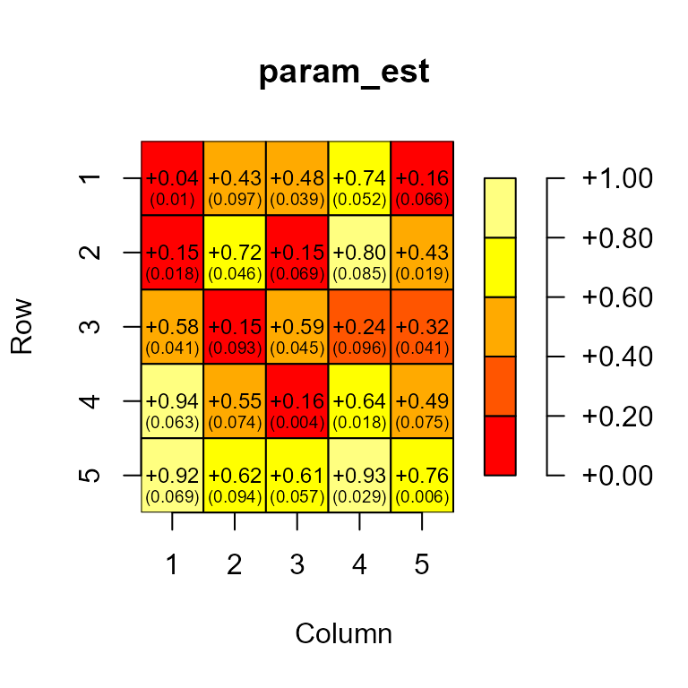
How can I use plot.matrix and the default scatter plot
in parallel?
The example illustrates the problem: the loadings of the factor analysis should be plotted as matrix and the factor scores as a scatter plot.
par(mar=c(5.1, 4.1, 4.1, 4.1)) # adapt margins such that all labels are visible
library("plot.matrix")
library("psych")
fa <- fa(iris[,-5], 2)
#> Loading required namespace: GPArotation
plot(fa$loadings) 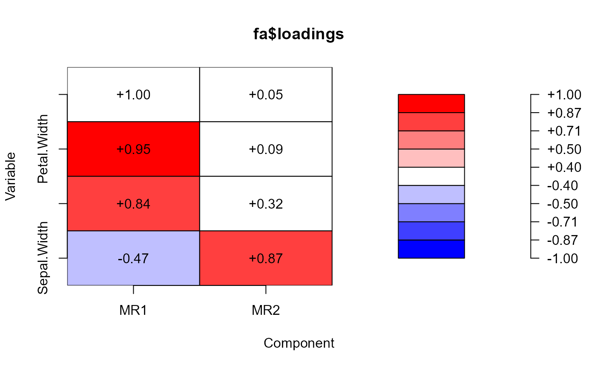
plot(fa$scores)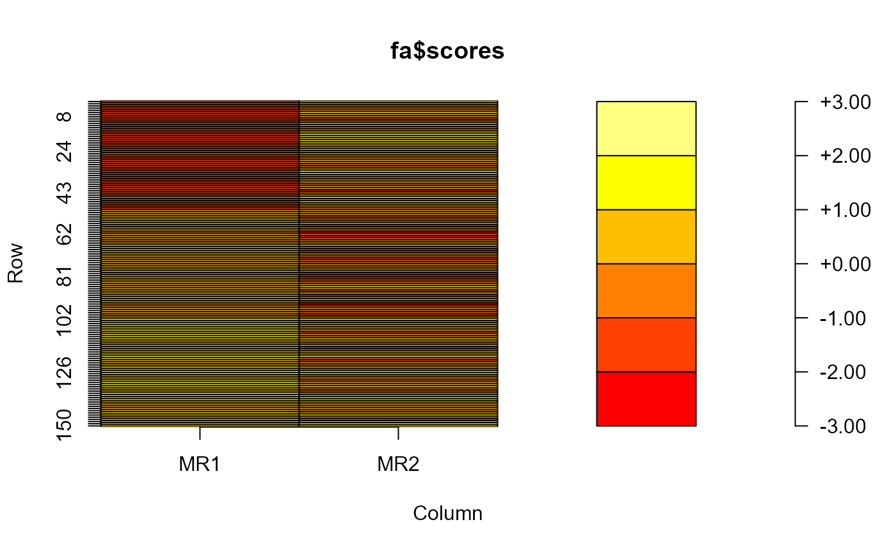
Solution 1: Convert the matrix to a data.frame
par(mar=c(5.1, 4.1, 4.1, 4.1)) # adapt margins such that all labels are visible
fa <- fa(iris[,-5], nfactor=2)
#> Loading required namespace: GPArotation
plot(fa$loadings) 
plot(as.data.frame(fa$scores))
Solution 2: Use plot.default
par(mar=c(5.1, 4.1, 4.1, 4.1)) # adapt margins such that all labels are visible
fa <- fa(iris[,-5], nfactors=2)
#> Loading required namespace: GPArotation
plot(fa$loadings) 
plot.default(fa$scores)Solution 3: Unload the package plot.matrix
permanently
If do not want to use the package plot.matrix for
further plotting then unload the package including the installed S3
functions with devtools::unload
par(mar=c(5.1, 4.1, 4.1, 4.1)) # adapt margins such that all labels are visible
library("plot.matrix")
library("psych")
fa <- fa(iris[,-5], 2)
#> Loading required namespace: GPArotation
plot(fa$loadings) 

Modifying a plot
Defaults
The default plot always draws a heatmap and a key where the colors
and breaks are determined by the entries of x. In case of a
numeric matrix ten colors from heat.colors are chosen and
eleven breaks with cover the range of entries with an equidistant grid.
In case of a non-numeric matrix each unique element gets a color
determined from heat.colors.
Modifying the breaks
In case of a numeric matrix the breaks give the interval
borders for a color otherwise for each unique matrix entry
breaks should contain a value. If breaks are
not given then they will be determined from the matrix object by using
the pretty function of base R.
par(mar=c(5.1, 4.1, 4.1, 4.1)) # adapt margins
# we only want the range of x
plot(x, breaks=range(x))
# we want seven colors
plot(x, breaks=7) 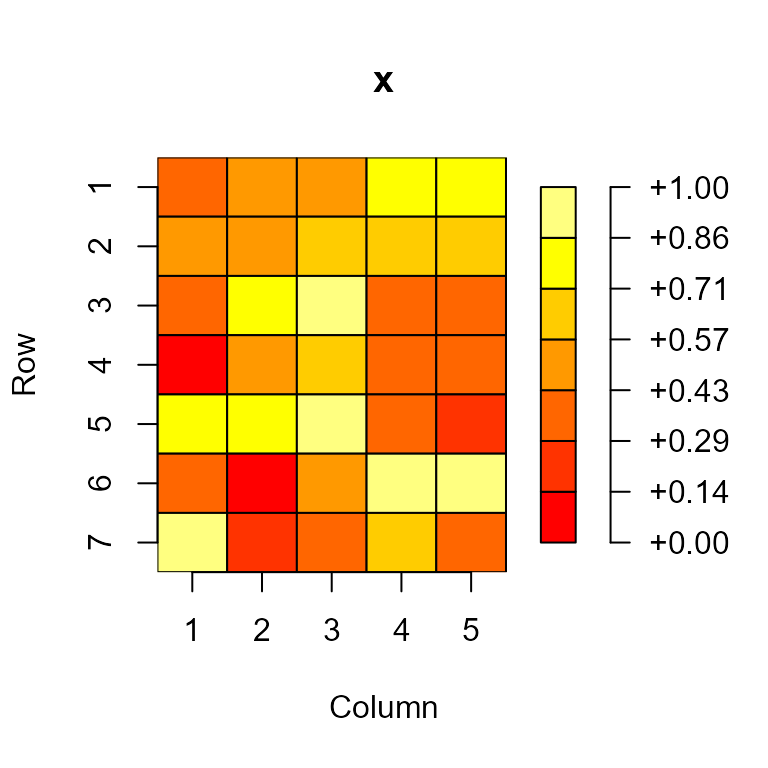
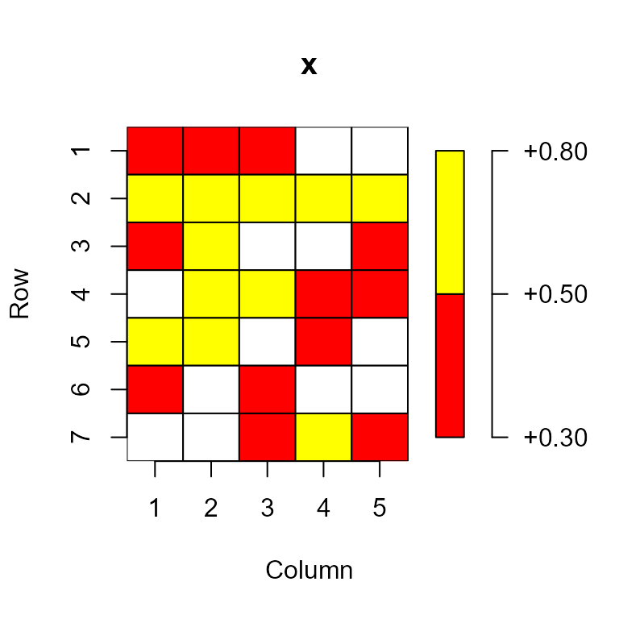
Modifying the colors
Cell colors
The col parameter is either a vector of colors used or a
function mycolor(n) which returns n colors on
request.
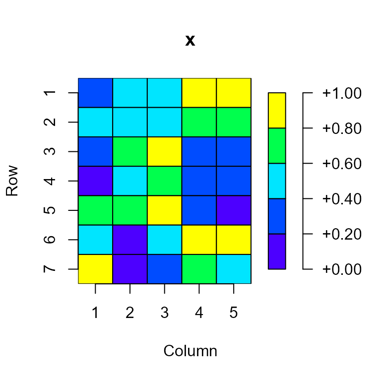
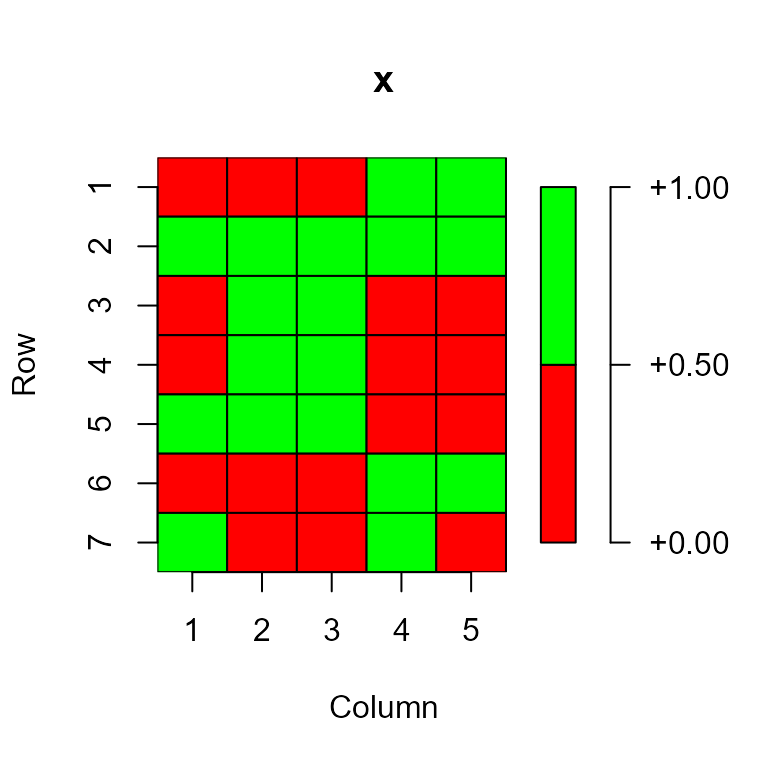
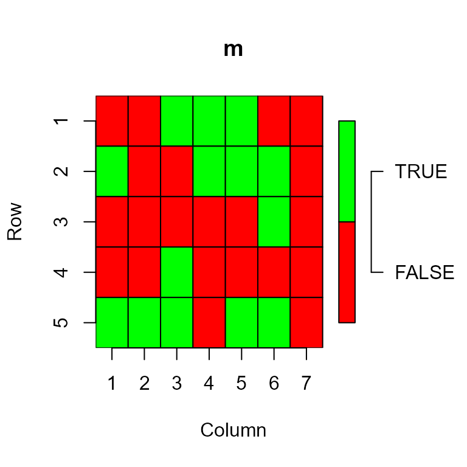
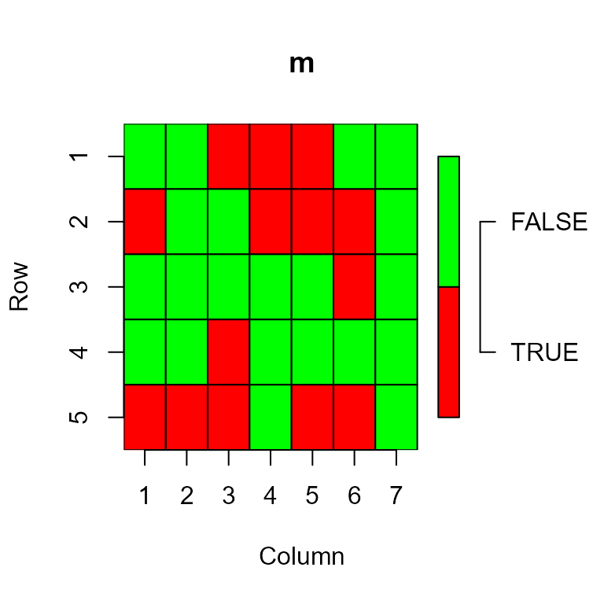
Note that for numeric matrices must hold
length(breaks)==length(col)+1 and for non-numeric matrices
length(breaks)==length(col).
Missing values and out-of-range matrix entries
The parameter na.col determines the color for missing
values and for matrix entries outside the current color scheme.
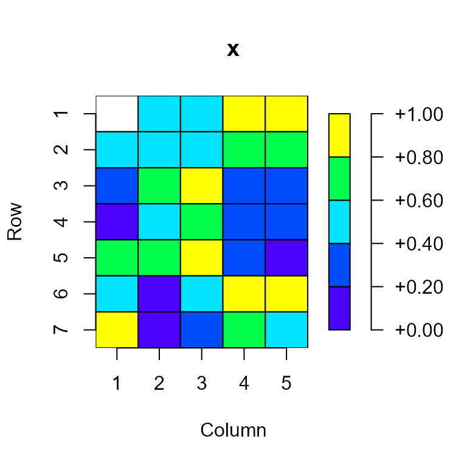
plot(x, col=topo.colors, na.col="red")
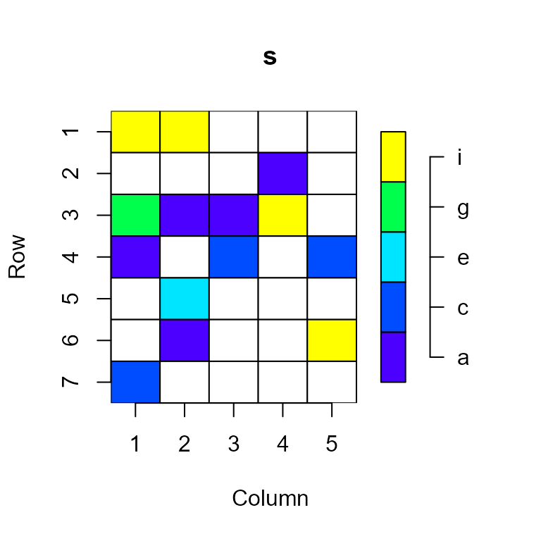
Modifying the key
Move the key
For moving the key to a different axis use key or
axis.key. Note that only a warning is issued if the axes
for rows, columns or the key are at the same side.
par(mar=c(5.1, 4.1, 5.1, 4.1)) # adapt margins
# move key to the top and make axis text smaller
plot(x, key=list(side=3, cex.axis=0.75), breaks=c(0,1))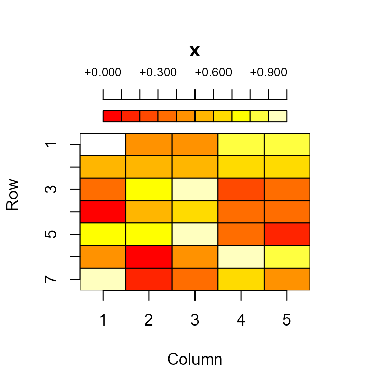
The parameter spacing.key gives the spacing between plot
and the key, the width of the key and the spacing between the key and
the axis. If you give a vector of length 1 or 2 then the missing values
will be appended with the defaults c(1, 0.5, 0)
par(mar=c(5.1, 4.1, 5.1, 4.1)) # adapt margins
# move key to the top, make axis text smaller, and move key farther away from the plot
plot(x, key=list(side=3, cex.axis=0.75), breaks=c(0,1), spacing.key=2)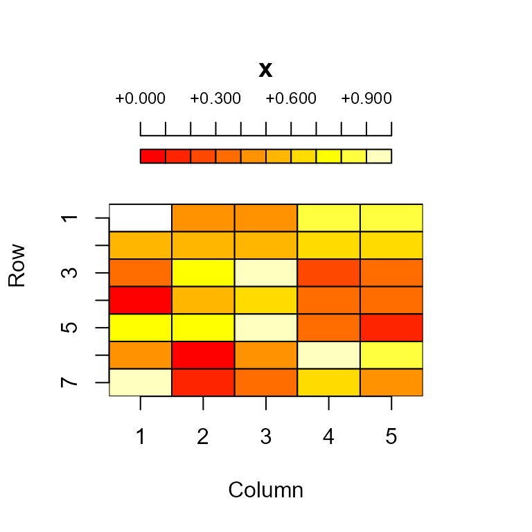
For a very large matrix
par(mar=c(5.1, 4.1, 5.1, 4.1)) # adapt margins
xl <- array(runif(1e4), c(1e2, 1e2))
brk <- 20
plot(xl, border=NA, breaks=brk, col=heat.colors(brk),
key=list(side=4, font=2, cex.axis=0.75), fmt.key="%.2f",
polygon.key=NULL, axis.key=NULL, spacing.key=c(3,2,2))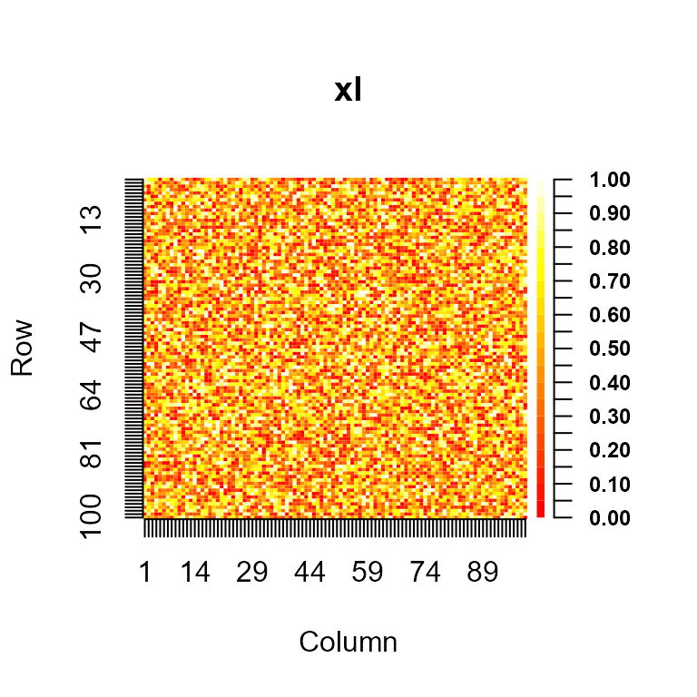
Change the output format of the key labels
You can either use digits which changes the output
format for all text. If you just want to change the output format for
the key labels use fmt.key, e.g.
par(mar=c(5.1, 4.1, 4.1, 4.1)) # adapt margins
# no plus sign
plot(x, fmt.key="%.3f", breaks=c(0,1))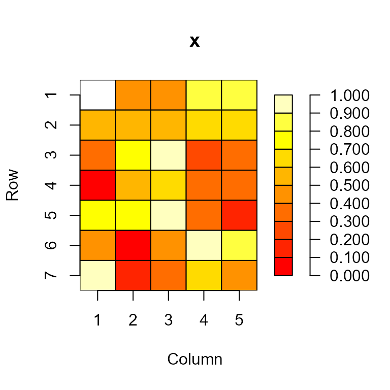
For details to the format string see sprintf, for
non-numeric matrices %s should be used.
Warning: The format string is passed down the OS’s sprintf function, and incorrect formats can cause the latter to crash the R process. R does perform sanity checks on the format, but not all possible user errors on all platforms have been tested, and some might be terminal.
Modifying the row and column axes
As default the row axis is drawn as y-axis and the col axis is drawn
as x-axis with row and column indices. If the matrix has
rownames(x) or colnames(x) then they will
used. The same holds for the labels of the axes if
names(dimnames(x))is not empty.
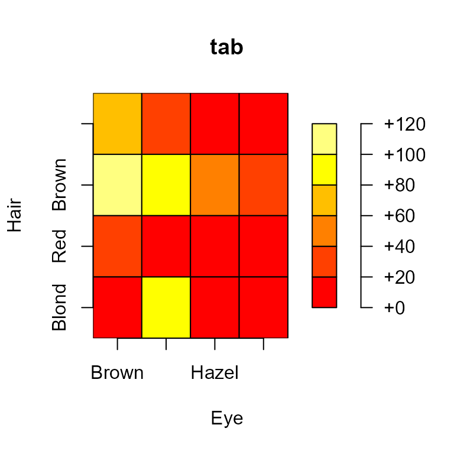
For moving, e.g. the column axis to the top, use
par(mar=c(5.1, 4.1, 5.1, 4.1)) # adapt margins
plot(x, axis.col=list(side=3, cex.axis=0.7), axis.row=list(cex.axis=0.7))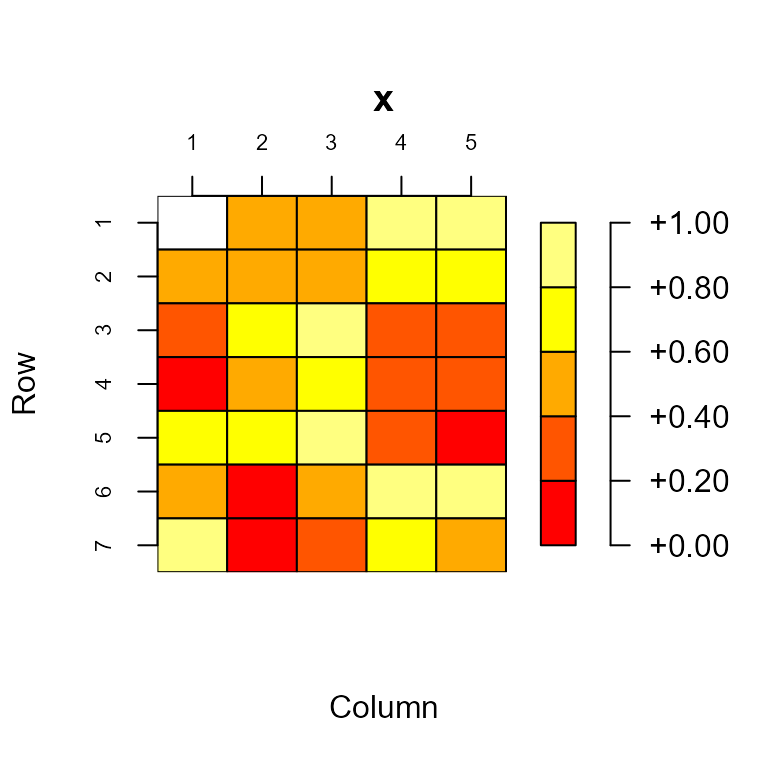
# or alternatively set cex.axis for all axes and use abbreviated positioning
plot(x, axis.col=3, cex.axis=0.7)For not drawing any axes use
Show matrix entries
You can either use digits which changes the output
format for all text. If you just want to change the output format for
the key labels use fmt.cell, e.g.
par(mar=c(5.1, 4.1, 4.1, 4.1)) # adapt margins
# change all text output
plot(x, digits=4, text.cell=list(cex=0.5))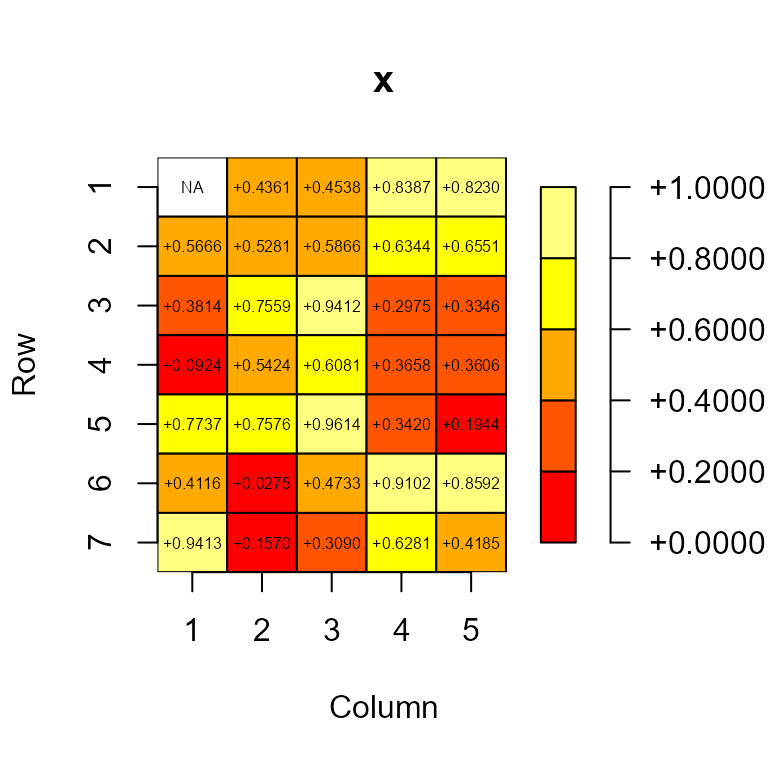
# of alternatively use the global parameter cex
plot(x, digits=4, cex=0.5)
# change just matrix entries (no plus sign)
plot(x, fmt.cell='%.2f')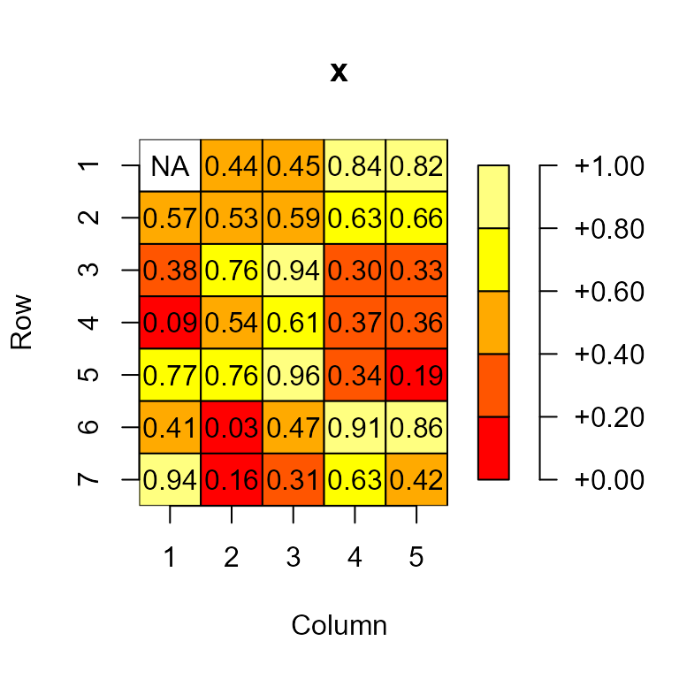
NA handling
Usually NA values in a matrix are drawn as white boxes
which determined by the value of the na.col parameter
(default: white) and if the matrix entries shown by `NA
x <- matrix(c(NA, 1, 2, 3), ncol=2)
par(mar=c(5.1, 4.1, 4.1, 4.1)) # adapt margins
plot(x, na.col='black', fmt.cell='%.0f')You may enforce with na.print no printing of
NAs or using a replacement text
x <- matrix(c(NA, 1, 2, 3), ncol=2)
par(mar=c(5.1, 4.1, 4.1, 4.1)) # adapt margins
plot(x, na.col='black', fmt.cell='%.0f', na.print=FALSE)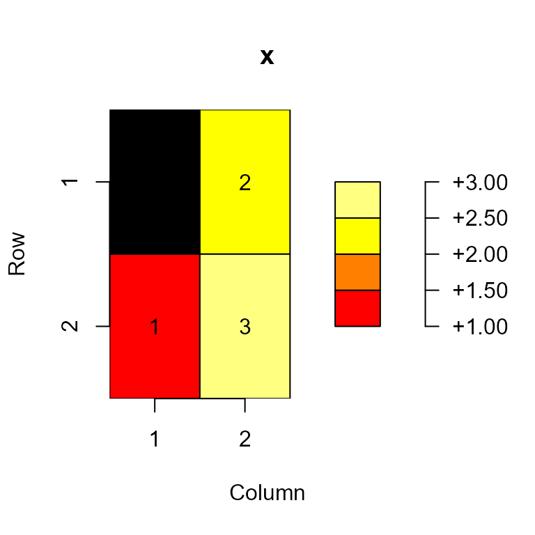
plot(x, na.col='black', fmt.cell='%.0f', na.print='Missing')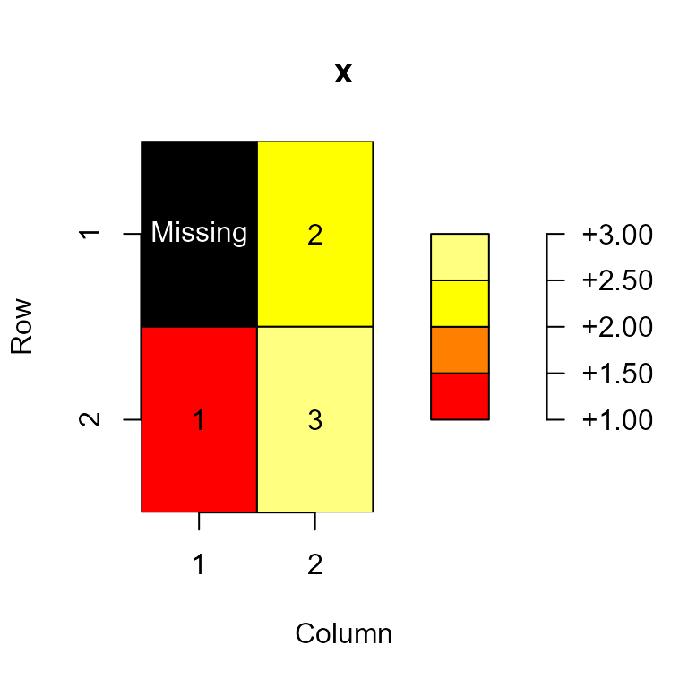
With na.cell you suppress printing of matrix entries at
all
x <- matrix(c(NA, 1, 2, 3), ncol=2)
par(mar=c(5.1, 4.1, 4.1, 4.1)) # adapt margins
plot(x, fmt.cell='%.0f', na.cell=FALSE)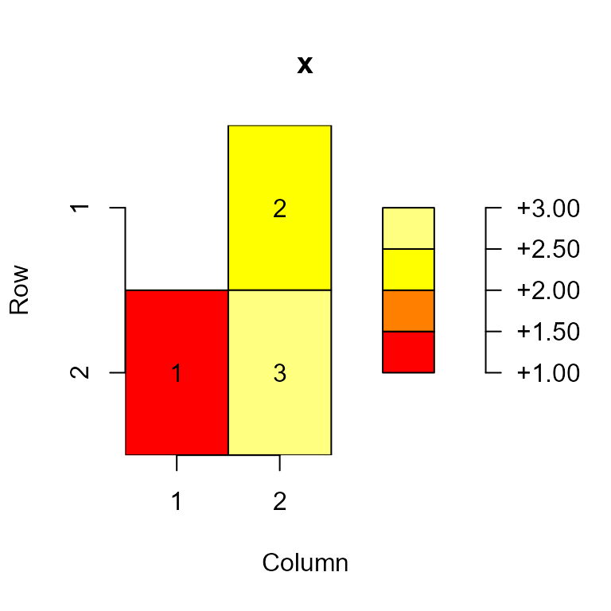
Automatic text color adjustment
It may happen that the text color and cell background color are too near which means you can not read the text anymore in a cell
par(mar=c(5.1, 4.1, 4.1, 4.1)) # adapt margins
# Never replace text color by black or white
plot(x, digits=2, text.cell=list(col="yellow", cex=0.75), max.col=-1) 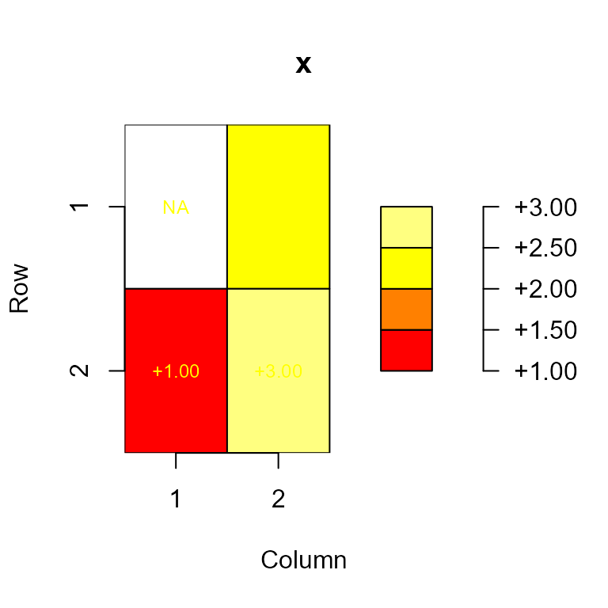
By default the text color is replaced by black or white (which is further away)
par(mar=c(5.1, 4.1, 4.1, 4.1)) # adapt margins
plot(x, digits=2, text.cell=list(col="yellow", cex=0.75)) Just replace text color if colors are nearer then the default
max.col=70
par(mar=c(5.1, 4.1, 4.1, 4.1)) # adapt margins
# In fewer cells the text color will be replaced by black
plot(x, digits=2, text.cell=list(col="yellow", cex=0.75), max.col=35) or farer away then the default
par(mar=c(5.1, 4.1, 4.1, 4.1)) # adapt margins
# In more cells the text color will be replaced by black
plot(x, digits=2, text.cell=list(col="yellow", cex=0.75), max.col=140) 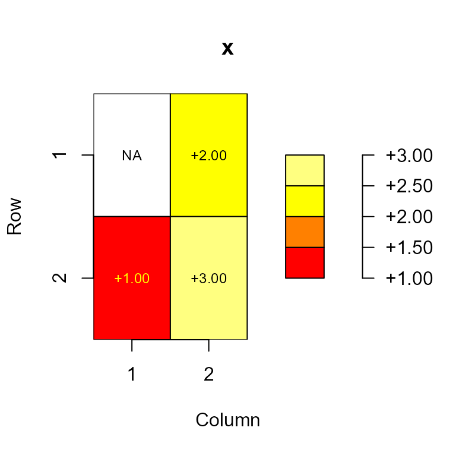
Of course, the best solution is to choose a good color scheme and a good text color ;)
Information about drawn elements
The plot command returns invisibly a list of the
elements drawn, a bit like hist. A NULL entry
means the element has not been drawn. The data may be useful for adding
own elements in the graphic.
# numeric matrix
x <- matrix(runif(35), ncol=5) # create a numeric matrix object
par(mar=c(5.1, 4.1, 4.1, 4.1)) # adapt margins
res <- plot(x)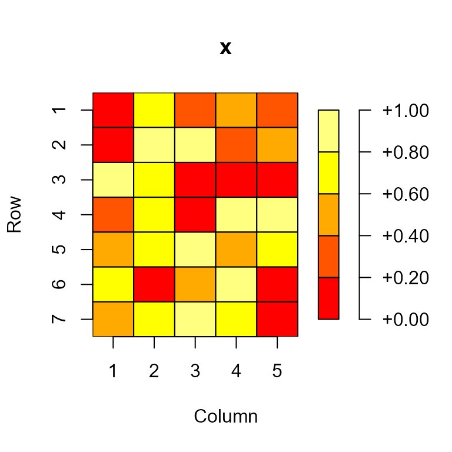
Available are the parameters for
-
cell.polygon,cell.text: the polygon and the text used to draw a matrix element, -
key.polygon,key.axis: the polygon and the axis used to draw a key element, and -
plot,axis.col,axis.row: the basic plot and the axes drawn.
#####
names(res)
#> [1] "plot" "cell.polygon" "cell.text" "axis.col" "axis.row"
#> [6] "key.axis" "key.polygon"
# parameters of polygon which was used to draw x[3,4]
res$cell.polygon[[3,4]]
#> $y
#> [1] 4.5 5.5 5.5 4.5
#>
#> $x
#> [1] 3.5 3.5 4.5 4.5
#>
#> $col
#> [1] "#FF0000"
#####
# parameters of text which was used for x[3,4]
res$cell.text[[3,4]] # NULL since no text was drawn
#> NULL
#####
# parameters of polygon which was used to draw the second key element
res$key.polygon[[2]]
#> $x
#> [1] 6.0 6.0 6.5 6.5
#>
#> $y
#> [1] 2.2 3.4 3.4 2.2
#>
#> $col
#> [1] "#FF5500"Example: Add shading lines
x <- matrix(runif(35), ncol=5) # create a numeric matrix object
par(mar=c(5.1, 4.1, 4.1, 4.1)) # adapt margins
res <- plot(x)
for (i in 1:length(res$cell.polygon)) {
args <- res$cell.polygon[[i]]
args$col <- NA # use no color
args$density <- 20*x[i] # density depends on matrix entries
args$angle <- 45
do.call("polygon", args)
}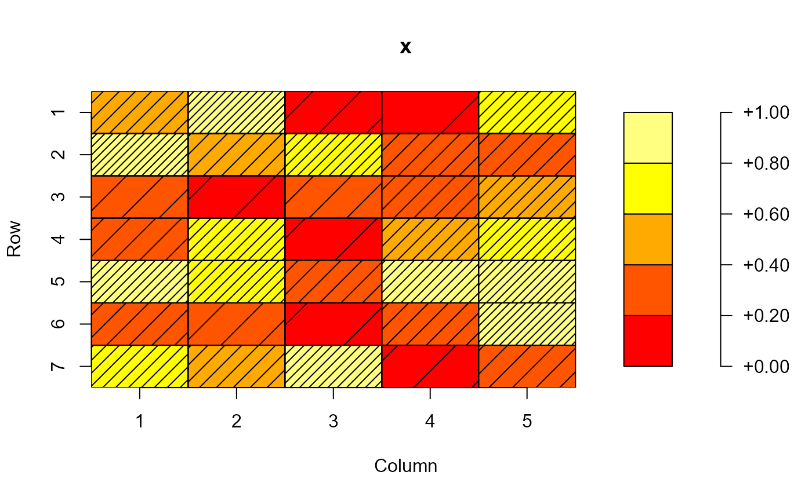
Example: Adding images
Please note that the PNGs have a transparent background. It depends on the graphic device how the transparency is taken into account.
x <- matrix(runif(35), ncol=5) # create a numeric matrix object
par(mar=c(5.1, 4.1, 4.1, 4.1)) # adapt margins
res <- plot(x)
#
library("png")
# PNGs are created from wikimedia commons images, CC0 by C. Koltzenburg
# https://commons.wikimedia.org/wiki/File:C.Koltzenburg_-_smiley-yes.xcf
# https://commons.wikimedia.org/wiki/File:C.Koltzenburg_-_smiley_no.xcf
happy <- readPNG(system.file('png', 'happy.png', package="plot.matrix"))
sad <- readPNG(system.file('png', 'sad.png', package="plot.matrix"))
for (i in 1:length(res$cell.polygon)) {
args <- res$cell.polygon[[i]]
if (x[i]>0.5) {
rasterImage(happy, args$x[1]+0.1, args$y[1]+0.1, args$x[3]-0.1, args$y[2]-0.1)
} else {
rasterImage(sad, args$x[1]+0.1, args$y[1]+0.1, args$x[3]-0.1, args$y[2]-0.1)
}
}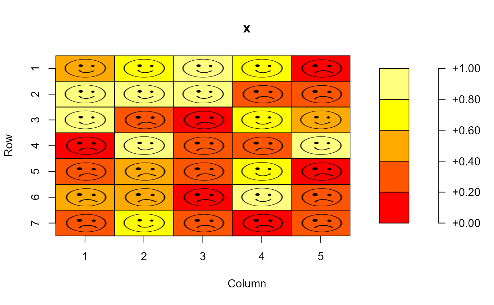
Plotting special matrices
For some special matrices we have special plot routines:
- loadings of a factor analysis or principal component analysis:
plot.loadings - correlations:
plot.cor - associations:
plot.assoc - p values:
plot.pvalue
All plot routines support the parameters
-
grayandgreyfor gray scale image -
reorderfor reordering rows (default:reorder=TRUE)
Note that matrix columns are only reordered if the column names are identical to the row names.
Loadings matrix
In factor or principal component analysis you may want to view the
loadings matrix. The S3 function plot.loadings allows to
create a heatmap with loadings. It differs from plotting a matrix by
- the color key ranges from -1 to 1,
- the breaks are set to
c(-sqrt(c(1, 0.75, 0.5, 0.25, 0.16)), 0, sqrt(c(1, 0.75, 0.5, 0.25, 0.16))), - the matrix rows, corresponding to the variables, are reordered (according to the breaks),
- the matrix entries are printed with two digits after the comma.
A typical threshold in factor analysis is an absolute loading greater equal 0.5; thus a factor “explains” 25% of the variance of a variable. Further thresholds are selected such that they explain 50% and 75% of the variable variance. Sometimes it might be useful to check whether there are loadings a little bit under 0.5, therefore another threshold of 0.4 is added.
All parameters described in Modifying a plot can be
used in plot.loadings as well.
library('plot.matrix')
library('psych')
data(bfi.2)
fa <- fa(bfi.2, 5, rotate="varimax")
par(mar=c(5.1, 4.1, 4.1, 4.1)) # adapt margins
plot(loadings(fa), cex=0.5)
Gray scale
For using a gray color scheme add gray=TRUEor
grey=TRUE to the call
library('plot.matrix')
library('psych')
data(bfi.2)
fa <- fa(bfi.2, 5, rotate="varimax")
par(mar=c(5.1, 4.1, 4.1, 4.1)) # adapt margins
plot(loadings(fa), cex=0.5, gray=TRUE)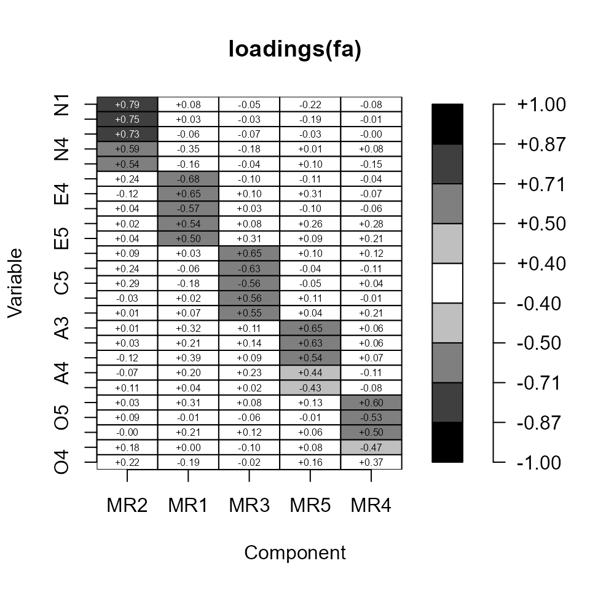
Correlations and associations
The S3 function plot.cor and plot.assoc
allow to create a heatmap with the coefficients. It differs from
plotting a matrix by
- the color key ranges from -1 to 1 for correlations and 0 to 1 for associations,
- the breaks are set to reflect the effect sizes given by Cohen
- the matrix rows, corresponding to the variables, are reordered using
distandhclustwith the defaults on the rows, - the matrix entries are printed with two digits after the comma.
All parameters described in Modifying a plot can be
used in plot.assoc or plot.cor as well.
library('plot.matrix')
data(Titanic.cramer)
par(mar=c(5.1, 4.1, 4.1, 4.1)) # adapt margins
plot(as.assoc(Titanic.cramer))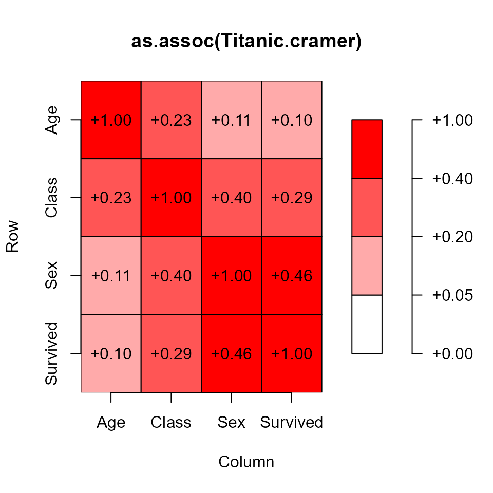
library('plot.matrix')
library('datasets')
c <- cor(airquality[,1:4], use="complete")
par(mar=c(5.1, 4.1, 4.1, 4.1)) # adapt margins
plot(as.cor(c))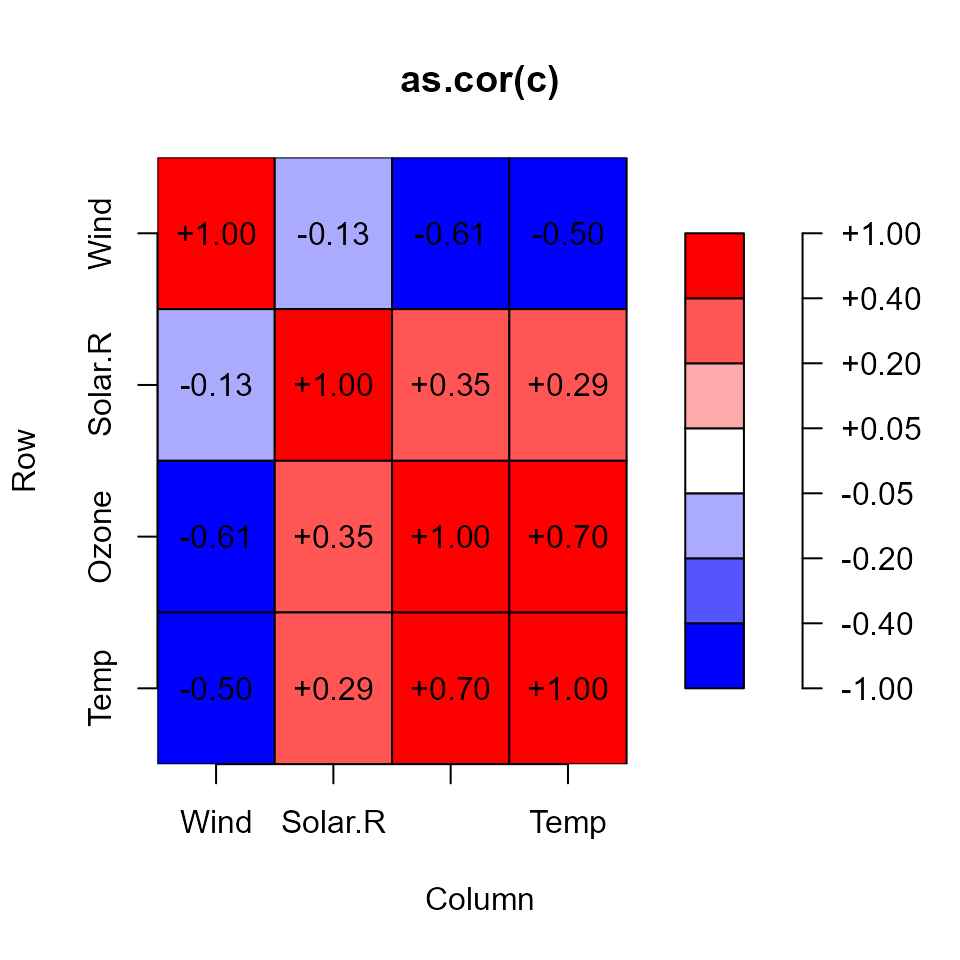
Gray scale
For using a gray color scheme add gray=TRUEor
grey=TRUE to the call
library('plot.matrix')
data(Titanic.cramer)
par(mar=c(5.1, 4.1, 4.1, 4.1)) # adapt margins
plot(as.assoc(Titanic.cramer), gray=TRUE)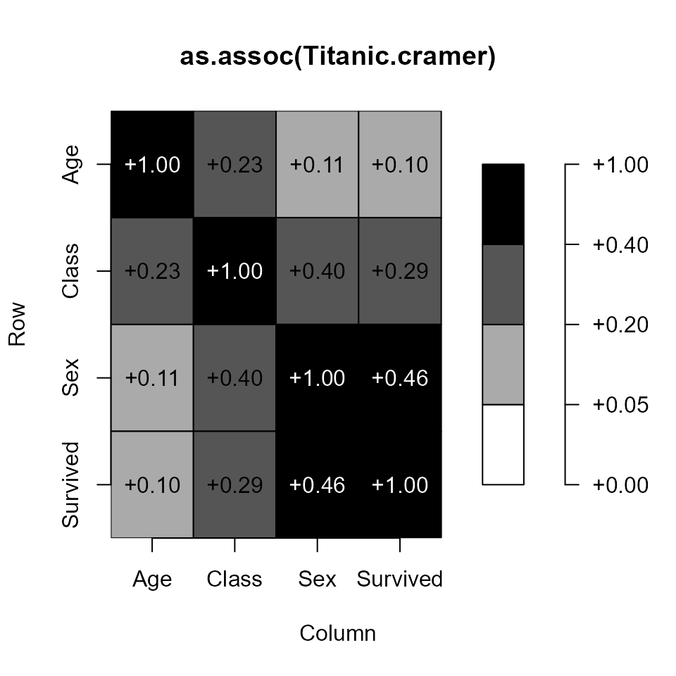
P values
The S3 function plot.pvalue allows to create a heatmap
from a matrix of p values. It differs from plotting a matrix by
- the color key ranges from 0 to 1
- the breaks are set to 0, 0.1, 0.05, 0.01, 0.001 and 1
- the matrix rows, corresponding to the variables, are reordered using
distandhclustwith the defaults on the rows, - the matrix entries are printed with three digits after the comma.
All parameters described in Modifying a plot can be
used in plot.pvalue as well.
library('plot.matrix')
data(air.pvalue)
par(mar=c(5.1, 4.1, 4.1, 4.1)) # adapt margins
plot(as.pvalue(air.pvalue))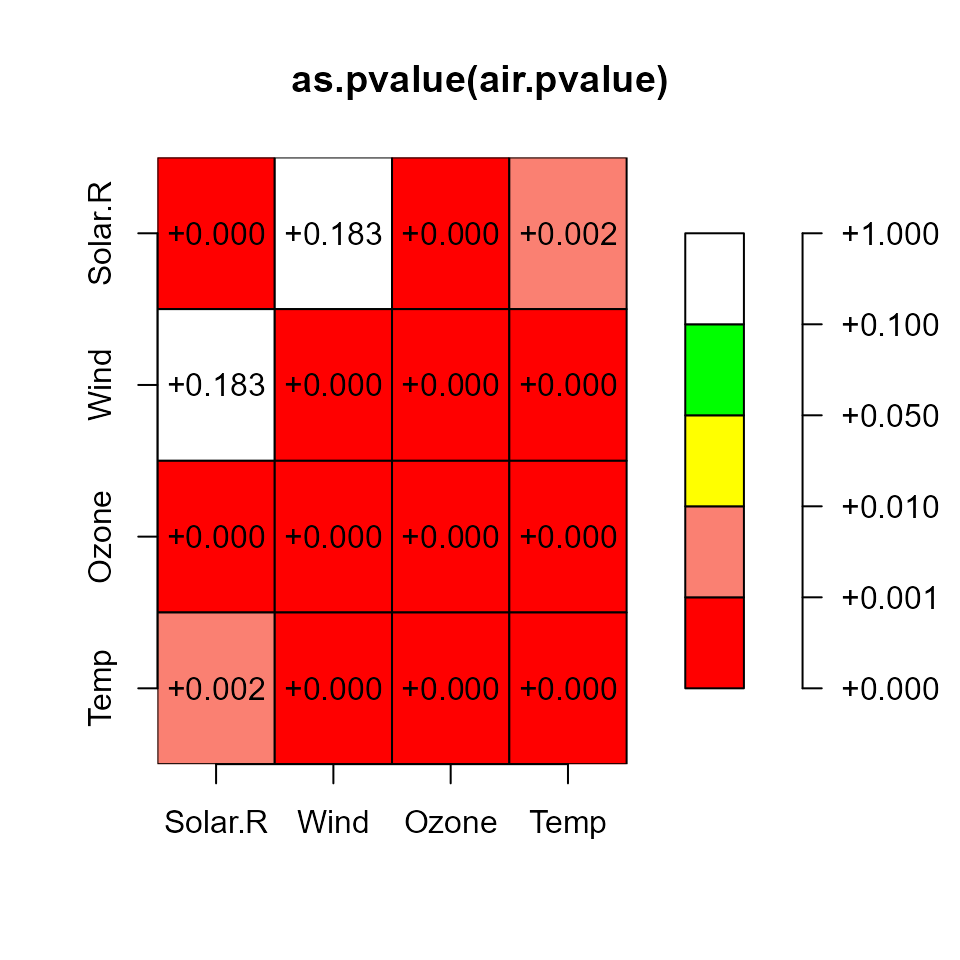
Gray scale
For using a gray color scheme add gray=TRUEor
grey=TRUE to the call
library('plot.matrix')
data(air.pvalue)
par(mar=c(5.1, 4.1, 4.1, 4.1)) # adapt margins
plot(as.pvalue(air.pvalue), gray=TRUE)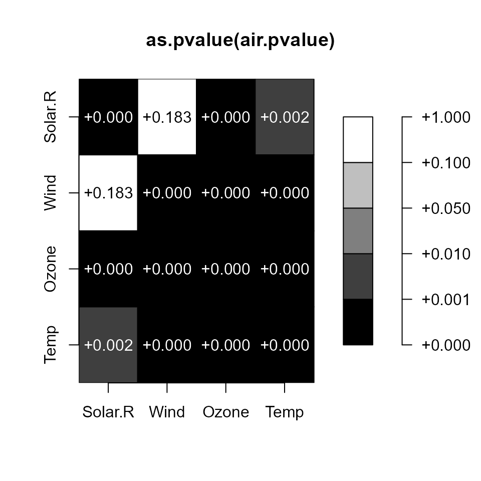